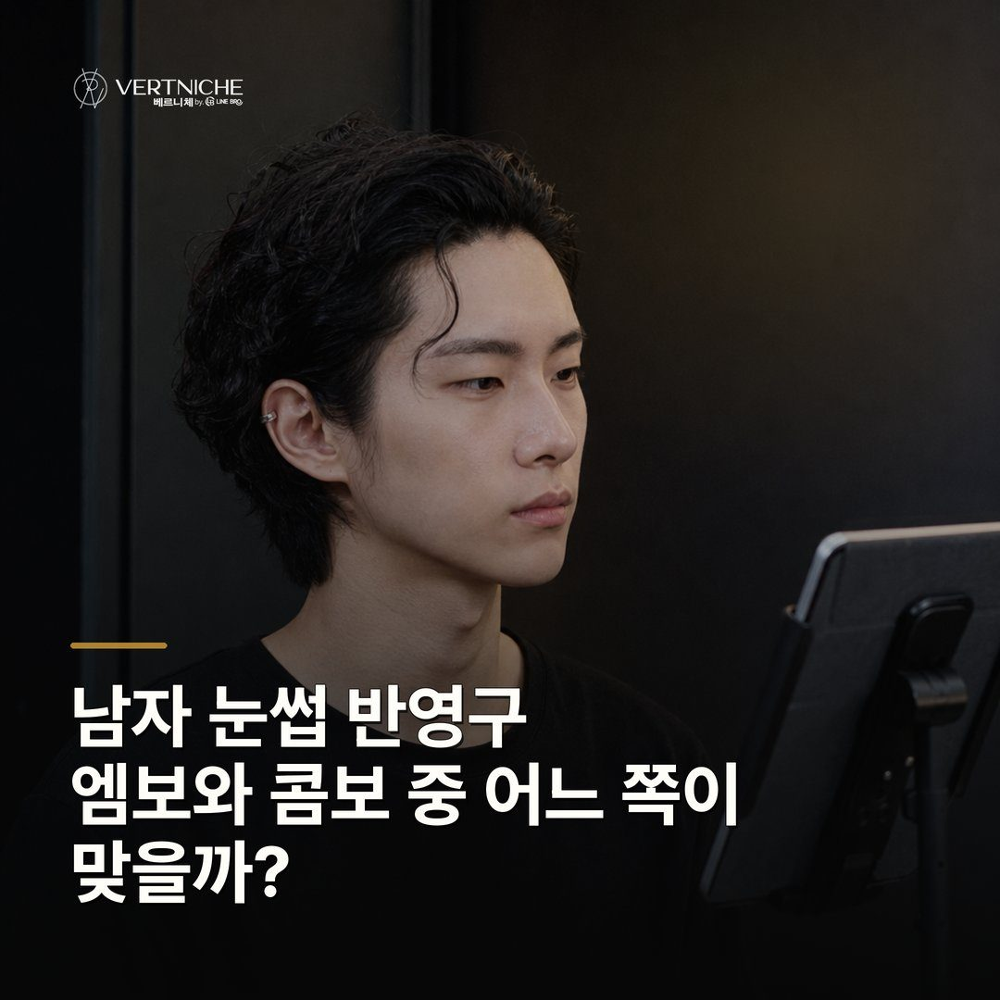

Care notes ·
남자 눈썹 반영구, 엠보와 콤보 중 어느 쪽이 맞을까?

- 엠보는 결을 그리고 콤보는 그 결에 밀도를 채우는 방식이에요
- 숱이 있으면 엠보로 충분하고, 콤보도 가능하지만 남자 눈썹엔 엠보를 권해요
- 미리 정하지 말고 눈썹 상태 보고 상담에서 정하는 게 맞아요
남자 눈썹 반영구에서 엠보는 결만 넣고, 콤보는 결에 면 밀도까지 채워요. 남자 눈썹은 결을 살리는 쪽이 대체로 자연스럽습니다.
엠보는 결을 그리고, 콤보는 결에 밀도를 얹어요
엠보는 얇은 날로 눈썹 결을 한 올씩 그어 넣는 방식이고, 콤보는 그 결 위에 점을 찍어 면 밀도까지 채우는 방식이에요.
남자 눈썹은 결 살린 자연스러운 쪽이 대체로 맞아요
남성분들한테는 면을 채운 진한 눈썹보다, 결을 살린 자연스러운 엠보가 어울리는 경우가 훨씬 많아요.
숱이 적어도 남자 눈썹은 결부터 살려요
숱이 어느 정도 있으면 엠보로 결만 살려도 충분하고, 숱이 비어도 남자 눈썹은 콤보보다 결을 촘촘히 넣는 쪽을 먼저 봐요.
뭘 할지보다 지금 눈썹 상태를 먼저 봐야 해요
엠보냐 콤보냐는 미리 정하고 오는 게 아니라, 눈썹 상태를 같이 보고 상담에서 정하는 게 맞아요.
상담 때 확인할 것
- 눈썹 숱 — 결만 살려도 찰지, 결을 더 촘촘히 넣어야 할지
- 결 방향 — 지금 눈썹이 어느 쪽으로 흐르는지
- 원하는 인상 — 자연스럽게 vs 또렷하게 중 어디인지
- 잔흔 유무 — 예전 시술 자국이 남아 있는지
자주 묻는 질문
엠보가 콤보보다 더 빨리 빠지나요?
엠보랑 콤보는 유지 기간이 거의 똑같아요. 둘 다 표피 쪽에 최대한 얕게 넣는 시술이라, 기법보다 피부와 관리가 차이를 만들어요. 보통 1년에서 1년 반 정도 보시면 되고 한 번에 빠지기보다 앞뒤부터 서서히 연해집니다.
콤보 하면 무조건 화장 눈썹처럼 되나요?
밀도를 올릴수록 시간이 지나 화장 눈썹처럼 면이 보이기 쉬워요. 그래서 남자분께는 결을 살리는 엠보를 권해요. 그래도 콤보를 원하시면 가능하고 어디까지 채울지 상담에서 같이 정해요.
두 기법 중에 먼저 정하고 가야 하나요?
미리 정하실 필요 없어요. 눈썹 숱이랑 결을 보고 상담에서 같이 정하는 게 맞아요. 원하시는 인상만 편하게 말씀해 주시면 거기 맞춰 방향을 잡아드립니다.
요약입니다. 사례와 사진이 있는 전체 글은 네이버 블로그에서 볼 수 있습니다.